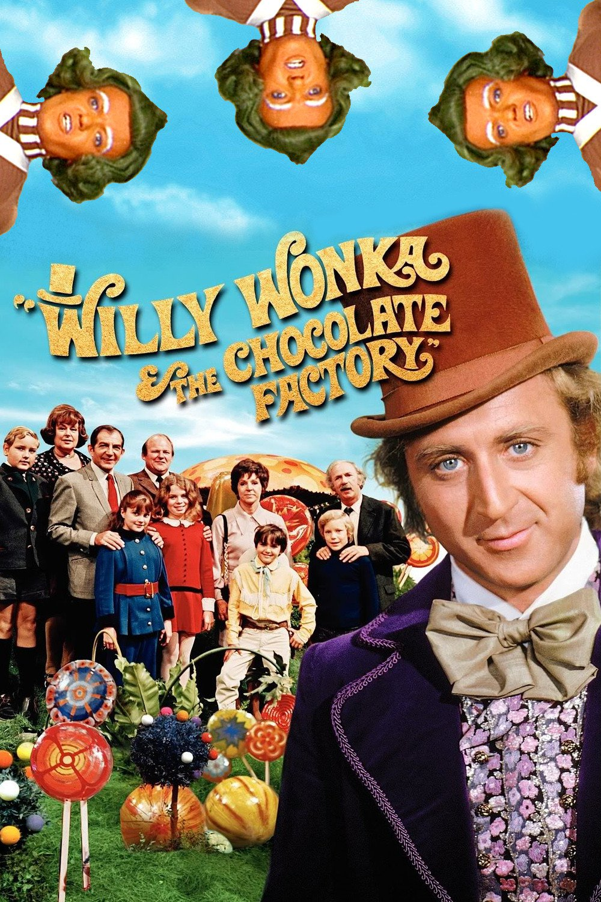

Poster of the 1971 film Willy Wonka And The Chocolate Factory
The film Willy Wonka And The Chocolate Factory directed by Mel Stuart and starring Gene Wilder is an adaptation from Roald Dahl's book Charlie And The Chocolate Factory. I love this film because its timeless and unforgettable. It's a film that you can watch at any age and at any time of the day. Gene Wilder's performance as Willy Wonka is not only intense but riveting with the way he protrays his character coming off as nutty, fun, odd, sarcastic, and sometimes scary through out the film. The musical numbers are very catchy and unforgettable. The film teaches life lessons by displaying the consequences from greed, gluttony, and selfishness. I get a sense of child like joy every time I watch it which never gets old.